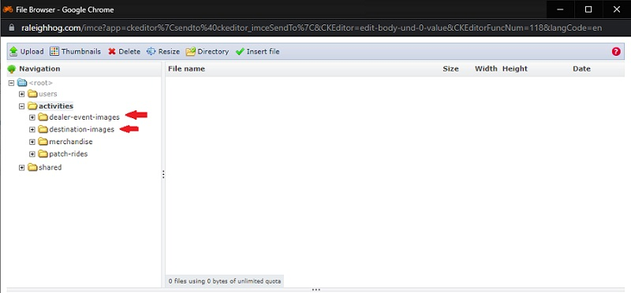

Update the Event Calendar on raleighhog.com
General notes, terminology and policies
- Please note that prior to doing anything in the production environment, you can test in the sandbox environment first. This environment is used for testing and is not seen by members.
- Your login credentials are the same for both environments
- Your webmaster will also help with any questions you may have.
- There are two Event Calendars
- Chapter Event Calender - the main calendar, anyone on our website can see all events
- Road Captain Event Calendar - viewable only by Raleigh NC Chapter Road Captains after successful login to their account
- 'Event' is a ride, meeting or activity that is posted on the Raleigh NC Chapter Event Calendar. Throughout this document they will all be referred to as event.
- Most of our events are 'closed', meaning members may invite a guest but the event can only take place if there is greater than 51% current Raleigh NC Chapter members. This is a HOG national policy and is due to insurance concerns.
- LOH 'open to all' events are closed events. The 'open to all' statement means the event is not just for LOH members but is open to all Raleigh NC Chapter members, National HOG members and other guests as desired.
- Consistancy is key. Do not use different terminology for the same event. For example, throughout the website and in campaigns our monthly meeting is referred to as "Monthly Chapter meeting". It should be referred to as such in the Event Calendar so the naming convention is consistant throughout and transparent to end users.
- Last names, phone numbers and/or member personal email addresses are not to be displayed in any forward facing document so they are not put in any event. The Raleigh NC Chapter Event Calendar is forward facing.
- 'Forward facing' means any page that a non-authenticated user has access to. A non-authenticated user is one that has not successfully logged in.
- The policy of maintaining privacy by not exposing last names, phone numbers, personal email addresses, personal motorcycle information, etc is from HOG national.
- National discourages HOG chapters from publishing any photographs of minor children, even with permission from a parent or guardian.
Create an Event
- Login to your account and there will be a smaller Navigational Bar (navbar) on top of the Chapter navbar. See image below

- Click Add content to go to the following screen... See image below
- Article - creates a blog entry, not used here and a different document
- Event - this is how Event Calender entries are made and is the purpose of this document
- Event checkin - the check-in process uses the HOG[SCAN] app, this is not used
- Forum topic - forum has been turned off for the website, this is not used
- Gallery - you have access to add to the Gallery but this will be done by the Photographer, not used here and a different document

- Click Event and the Create Event page opens
- There are four required fields. These fields, designated with a red asterisk, must be populated prior to saving the event.
- Title - A short, descriptive title
- EVENT DATE - Includes Date and Time, Show End Date is only checked if the event is an over-nighter. The second Date / Time fields are populated with the last day of the event.
- Date - Event date formatted as mm/dd/yyyy
- Time - Event time formatted as hh:mm followed by am or pm
- Event type - our events (rides / meetings) are closed events
- Note: If Event type is Road Captain Events or RC pre-rides, the event will only appear on the Road Captain Event Calendar. (The RC Event Calendar can only be viewed by RC's after they've logged in.)
- Ride Mileage - we do not use this field, it can be left blank
- Points - used only to identify newer members, leave at the default of 10
- Event Coordinator - select from the dropdown. If the name isn't in the list leave it blank
- Image - leave blank. An image, if available, will be included in the Body area. (If populated here it messes with the copy flow and the map.)
- Body (Edit summary) - this is where the destination image and the event details are placed
- The image below shows the Body toolbar

- Hover over an icon to see a tooltip pop-up of the function of that icon. The icons highlighted in red are ones that are of use. The rest can be ignored as there is no need to use HTML/CSS to style the copy.
Link icon - e.g. used to provide a link to a hotel to make reservations for overnight tripsImage icon - e.g. used to include an image of the destination in the copy. Images for frequent ride destinations and dealer events have been preloaded and are currently available.Bold icon - e.g. used to make text stand out. For instance, Login and click RSVP to repondItalic icon - e.g. the name of the restaurant or destination is usually in italics to make it stand out from the rest of the copySize icon - e.g. the font size defaults to 14px. It reads easier if you choose 16 from the dropdown.
- Click the
image icon to add an image to the copy and the following pop-up appears. See image below 
- Click the Browse Server button. The following window opens... 
- Click either dealer-event-images or destination-images to open it
- Select the image you wish to use. NOTE: single click the name to see a preview of the image. Double click the name to select it.
- You are brought back to the Image Properties pop-up and you can now see a preview of the image you chose.
- Tip: You do not want users to scroll through a large image to see the details of the event. In either the Width or Height boxes change the larger of the two to 400. The images aspect ratio will be maintained and users will appreciate seeing a smaller image.
- Click the OK button
- You can continue editing the Body to add text about the event.
Tip: hit the spacebar so the text starts on the line below the image.
- Editing tip for the Body (Edit summary) section.
- Use the
Shift+Enter keys to have a break in the line.
- Use the
Enter key to start a new paragraph.
- Note that in the copy, the times listed match the format of the website timestamp. You want to keep things consistant.
- See image below for demonstraton

- EVENT LOCATION section
- Does not have to be filled in
- If known, fill in Street, City, State and Postal code
- Click the "Find Address on Map" button to populate the map
- Scroll to the bottom of the page and click the "Save" button
- The event has been added to the appropriate calendar